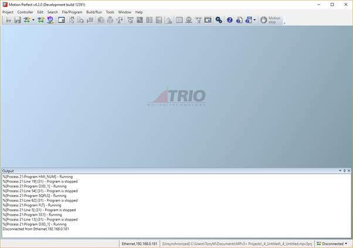
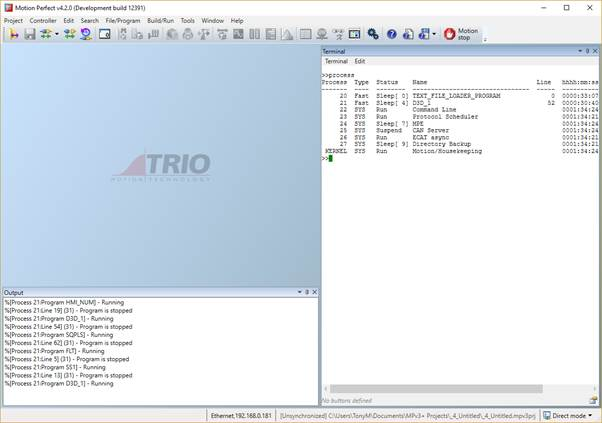
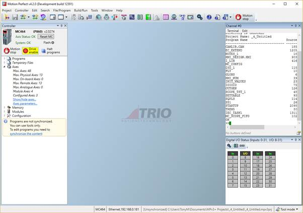
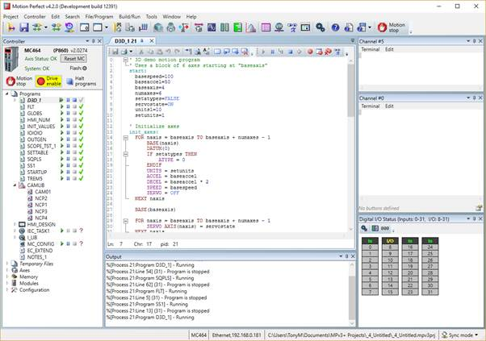

The "Main Window" is the main user interface of Motion Perfect. It acts as a desktop for displaying all controls needed to interact with a single controller.
Because the tools available to the user are different for each operating mode the Main Window tends to take on a different appearance for each mode.
In all operation modes the user has access to the Main Menu and Main Toolbar for commands, although the commands available will depend on the operation mode.



